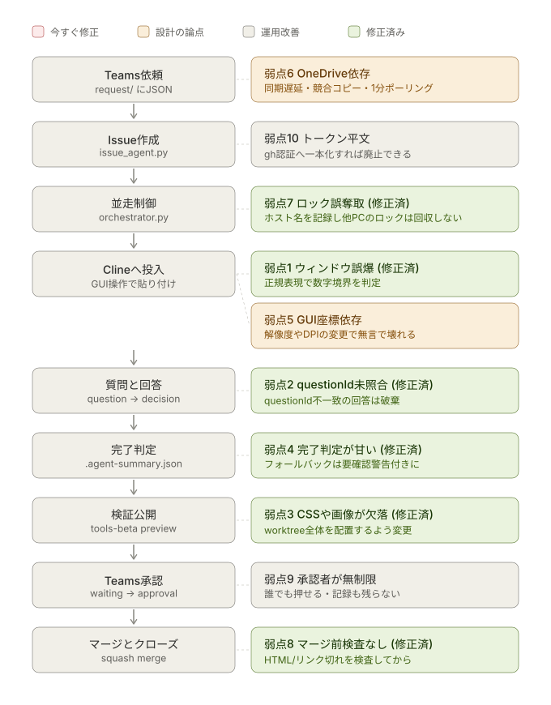

Teams × Power Automate × Cline AIエージェント開発基盤
Teamsに依頼を書き込むと、GitHub Issueが立ち、Clineが実装し、 検証用サイトで動作確認し、Teamsで承認するとmainへマージされてIssueが閉じる。 この一連をIssueごとに並走させるための一式です。
Teams依頼
↓ ① Power Automate
request/*.json ──→ issue_agent.py ──→ GitHub Issue作成
↓ state/issue-N.json (created)
orchestrator.py（並走制御）
↓ Issue 1件につき1プロセス
implement_agent.py
├ git worktree + feature/issue-N-xxx
├ Clineへプロンプト投入
├ 質問 → question/ → ③ → decision/ → Clineへ返す
├ commit / push / ドラフトPR作成
├ tools-beta へプレビュー公開
└ waiting/issue-N.json（承認待ち）
↓ ④ Power Automate（承認カード）
approval/issue-N.json
↓
approval_agent.py
┌───────────┼───────────┐
承認 再実装 却下
↓ ↓ ↓
finish_agent.py rework へ戻す PRクローズ
squash merge （再度実装） 変更破棄
Issueクローズ Issueクローズ
プレビュー削除
worktree削除
アクター（Teams / Power Automate / OneDrive / Python / Cline / GitHub）ごとに 誰が何をしていて状態がどう変わるかは、 docs/01_architecture.md のスイムレーン図を参照してください。
現状の弱点マップ
上の流れに、既知の設計上の弱点を重ねたものです。 赤は今すぐ直すべき実バグ寄り、橙は設計そのものの論点、灰は運用しながらでよい改善です。

1・2・3・4・7・8は修正済みです（下表参照）。残る赤は無くなりました。 入口（Teams依頼）と出口（承認・マージ）に残る橙・灰は、 設計変更かPower Automate側の対応が必要なため未着手です。
弱点1・4・3はかつて連鎖する経路でした。 ウィンドウを取り違える → サマリーが作られないまま時間切れ → 変更なしでもコミット → CSSが欠けたプレビューで承認を求める、という流れです。 1を直したことでこの連鎖の起点は消えていますが、3・4も独立に修正済みです。
| # | 弱点 | 該当箇所 | 対処 |
|---|---|---|---|
| 1 | ✅ ウィンドウ特定が部分一致 | agent_core/cline.py focus_window |
修正済み。数字境界つき正規表現 (?<!\d)issue-N(?!\d) で照合 |
| 2 | ✅ questionId を照合していない |
implement_agent.py wait_for_decision |
修正済み。questionId 不一致の回答は破棄して待機継続 |
| 3 | ✅ プレビューが変更ファイルのみ | deploy_preview.py copy_worktree_tree |
修正済み。worktree全体（.git除く）を配置するよう変更 |
| 4 | ✅ 完了判定のフォールバック | implement_agent.py wait_for_implementation |
修正済み。フォールバック時は「未実施の確認」に警告を明示 |
| 5 | GUI自動操作への依存 | agent_core/cline.py |
CLI型エージェントへ差し替え（inject_prompt のみ） |
| 6 | OneDriveをキューに使用 | 全体 | SharePointリストかStorage Queueへ |
| 7 | ✅ ロックがローカルPID基準 | agent_core/locks.py _reclaim_if_stale |
修正済み。ロックにホスト名を記録し、別ホストのロックは生死判定できないため自動回収しない。agent_cli.py unlock は別ホストのロックに --force を必須化 |
| 8 | ✅ マージ前の自動チェックなし | finish_agent.py check_static |
修正済み。agent_core/checks.py でHTML対応・リンク切れを検査。repo-templates/ にCI版も同梱 |
| 9 | ✅ 却下でIssueをクローズ | finish_agent.py reject |
修正済み。openのまま needs-rework ラベルを付与。agent_cli.py retry でアーカイブから復元して再着手可能 |
| 10 | GITHUB_TOKEN が平文 |
agent_core/ghcli.py |
gh issue create に寄せてトークンを廃止 |
図は images/flow-weaknesses.svg、生成スクリプトは tools/build_svg.py です。
残る5・6・7・10を潰したら、該当行と図の色を更新してください。
主な設計判断
| 論点 | 採用した方式 | 理由 |
|---|---|---|
| 並走 | Issueごとに git worktree |
同一リポジトリでブランチ切替の競合が起きない。Gitの標準機能。 |
| GUI競合 | 「Clineへの貼り付け」だけロックで直列化 | 実装・待機・承認は並走させつつ、GUIは1つしか無いという制約を守る |
| 分岐戦略 | GitHub Flow（feature/issue-N-slug → main） |
デファクトスタンダード。PRの Closes #N でIssueが自動クローズされる |
| マージ | gh pr merge --squash --delete-branch |
履歴が1Issue=1コミットで追いやすい。ブランチも自動削除 |
| 動作確認 | tools-beta の preview/issue-N/ に配置しGitHub Pagesで公開 |
Issueごとにパスが分かれるので並走してもプレビューが混ざらない |
| 状態管理 | state/issue-N.json を正本、工程フォルダは伝票 |
途中でプロセスが落ちても状態から再開できる |
| Teams通知 | Pythonは reply/ へJSONを置くだけ |
PythonにTeams認証を持たせない。失敗時も再送できる |
フォルダ構成
ai-agent-system/
├── agent/
│ ├── agent_core/ 共通モジュール
│ │ ├── config.py 環境変数・パス定義
│ │ ├── logs.py ロガー
│ │ ├── jsonio.py OneDrive安全なJSON入出力・done退避
│ │ ├── locks.py ロック（デーモン/Issue/GUI）
│ │ ├── statefile.py 状態機械
│ │ ├── gitops.py Git・worktree操作
│ │ ├── ghcli.py GitHub操作
│ │ ├── teams.py Teams通知（reply JSON出力）
│ │ ├── cline.py VS Code / Cline のGUI操作
│ │ └── prompt.py Clineプロンプト生成
│ ├── issue_agent.py ①request監視 → Issue作成
│ ├── orchestrator.py ②state監視 → 並走割り当て
│ ├── implement_agent.py ③Issue 1件分の実装ワーカー
│ ├── deploy_preview.py ④tools-betaへプレビュー公開
│ ├── approval_agent.py ⑤approval監視 → 振り分け
│ ├── finish_agent.py ⑥マージ・Issueクローズ
│ ├── dashboard_agent.py 補助: Issue状態ダッシュボード（tools-betaへ公開）
│ ├── agent_cli.py 運用コマンド
│ ├── tests/ 自動テスト（pytest、133件）
│ ├── requirements.txt
│ └── requirements-dev.txt テスト実行用（pytest）
├── scripts/
│ ├── setup.ps1 初期セットアップ
│ ├── start_all.ps1 常駐3本の起動
│ └── stop_all.ps1 停止
├── powerautomate/
│ ├── definitions/ フロー定義JSON
│ ├── 04_reply_to_teams.zip インポート用パッケージ（新規）
│ └── existing/ 現行3フローのエクスポート
├── docs/
│ ├── 01_architecture.md 構成と状態遷移
│ ├── 02_setup.md 導入手順
│ ├── 03_power_automate.md フロー設定
│ ├── 04_operations.md 運用・トラブルシュート
│ ├── 05_verification.md 実環境での動作確認チェックリスト
│ └── images/ 各ドキュメントの図（SVG）
└── docs-html/ 上記をブラウザで読む用に変換したHTML版（index.htmlから）
docs-html/ はブラウザでそのまま開けます（docs-html/index.html から）。
Markdownを編集したら次で再生成してください。
pip install markdown pymdown-extensions
python tools\build_docs_html.py
クイックスタート
# 1. セットアップ（環境変数・フォルダ・専用venv・依存パッケージ）
powershell -ExecutionPolicy Bypass -File .\scripts\setup.ps1
# 2. PowerShellを開き直し、このプロジェクト専用のvenvをアクティベートしてから点検
# （他プロジェクトのvenvがアクティベートされたままだと混線するので注意）
.\.venv\Scripts\Activate.ps1
python agent\agent_cli.py doctor
# 3. Power Automate の4フローを設定（docs\03_power_automate.md）
# 4. 常駐エージェントを起動（同じvenvがアクティブな状態で）
powershell -ExecutionPolicy Bypass -File .\scripts\start_all.ps1 -Parallel 3
# 5. Teamsの依頼チャネルへ投稿してみる
start_all.ps1 は新しいPowerShellウィンドウを開いて常駐プロセスを
起動しますが、python コマンドをそのまま使わず、このリポジトリの
.venv 内の python.exe を絶対パスで直接指定して起動します。
起動元シェルで別プロジェクトのvenvがアクティベートされていても、
新しいウィンドウ側がそれを引き継ぐことはありません
（手動でのアクティベートも不要です）。
自動テスト
agent/tests/ に pytest ベースの回帰テストがあります（133件）。
実際のOneDrive・GitHub・Teamsには触れず、隔離された一時ディレクトリと
ローカルのgitリポジトリだけで完結するので、開発機でそのまま実行できます。
cd agent
pip install -r requirements-dev.txt
pytest
修正した実バグ（弱点1・2・3・4・7・8・9）にはそれぞれ対応する回帰テストがあります。
コードを変更したら、コミット前に pytest を通してください。
gh コマンドが必要な範囲（Issue作成・PR操作・マージ）はテスト対象外です。
動作確認の最小手順
# request を作らず、Issue番号を直接指定して実装ワーカーだけ動かす
python agent\implement_agent.py 123 --manual
# 承認せずにマージ処理だけ試す
python agent\finish_agent.py 123 --approve
# 状態を見る
python agent\agent_cli.py status
python agent\agent_cli.py show 123
詳細は docs/ を参照してください。